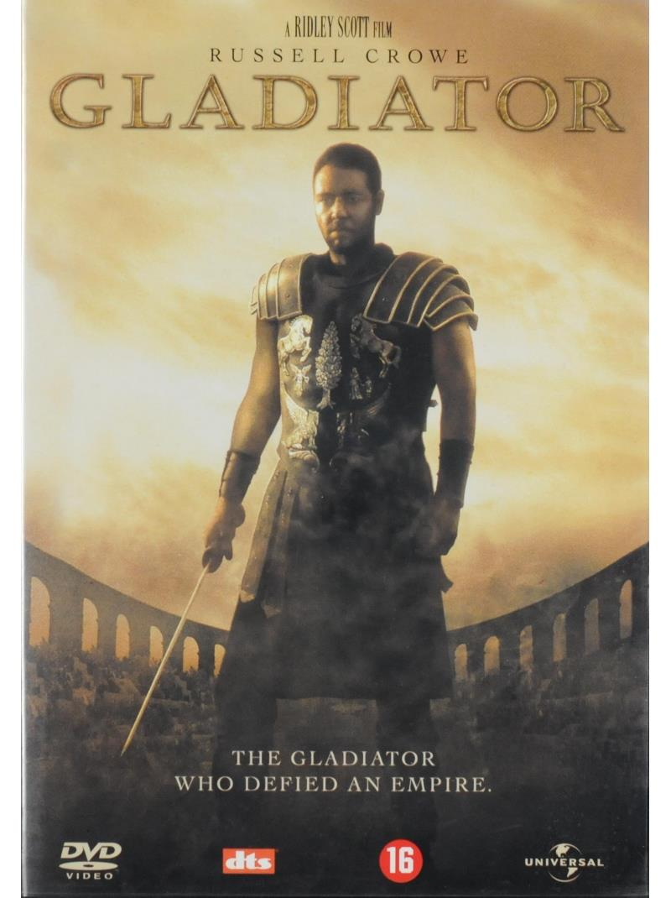

Gladiator is a 2000 epic historical drama film directed by Ridley Scott and written by David Franzoni, John Logan, and William Nicholson. The film was co-produced and released by DreamWorks Pictures and Universal Pictures. DreamWorks Pictures distributed the film in North America while Universal Pictures released it internationally through United International Pictures.
The film was shot in three main locations:
Other Gladiator filming locations include Ait Benhaddou, Alabama Hills, Cinema Studio Atlas, Shepperton Studios and Val d'Orcia.
Gladiator was anticipated to become one of 2000's most successful films. Upon its release, the film grossed over $460.5 million worldwide, making it the second highest-grossing film of 2000, finishing behind Mission: Impossible 2.
The film won five Academy Awards: Best Picture, Best Actor for Russell Crowe, Best Visual Effects, Best Sound, and Best Costume Design. It was nominated for an additional seven, including Best Original Screenplay, Best Supporting Actor for Joaquin Phoenix and Best Director for Ridley Scott.
Upon its initial release, Gladiator opened to generally positive reviews. On review aggregator Rotten Tomatoes, Gladiator has an approval rating of 78% based on 205 reviews, with an average rating of 7.30/10. The website's critical consensus reads, "Ridley Scott and an excellent cast successfully convey the intensity of Roman gladiatorial combat as well as the political intrigue brewing beneath."